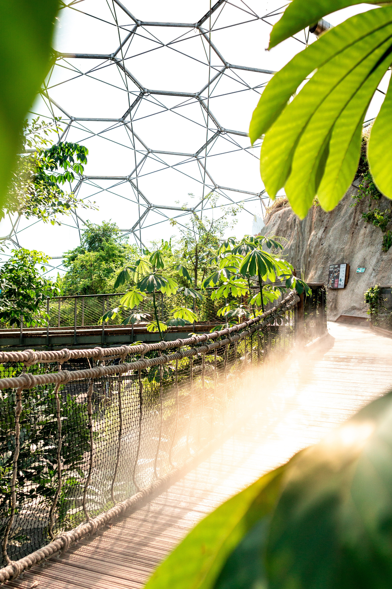
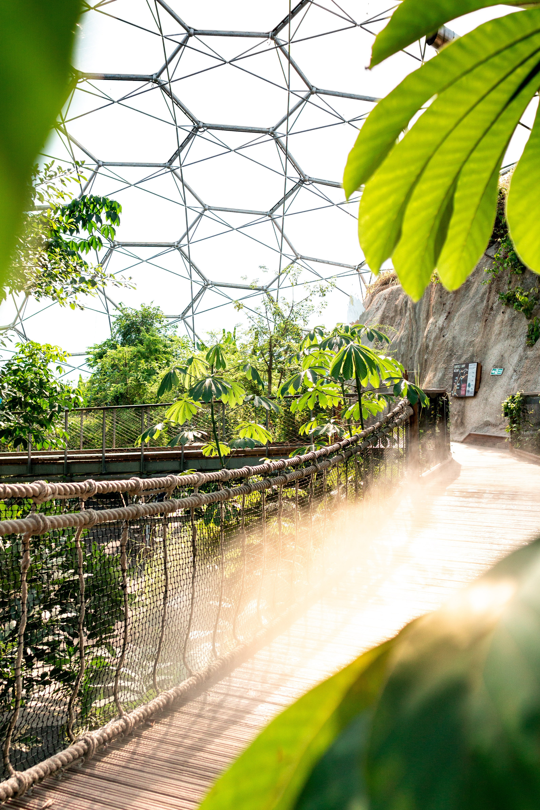

England's sights are nothing to scoff at! The country offers many different types of sights ranging from its natural landscape and old architecture to peculiar facilities. This section will present such sites all while giving a short summary of them.
The eden project is located in Cornwall and it’s a botanical garden that consists of domes which act as smaller greenhouses with different types of plants growing in each one. The facility offers education for visitors as well as many more fun activities. It has its own hotel and restaurant as well as fun activities that can range from swinging on giant swings to ziplining and summer concerts!
 

The next attraction is not a specific facility but a city known for its entertainment and
importance to English culture as a whole. You can think of Canterbury as England's version of
the Swedish island Gotland as it’s a medieval city that embraces its medieval culture. Canterbury
has great shopping facilities, restaurants and cafés as well as many other different attraction
sites but the most eye-catching one is definitely the Canterbury cathedral.
The Canterbury cathedral is a cultural monument for the city and the cathedral itself features
remarkable architecture and offers tours for visitors as well as lodging for those considering
staying overnight. It also offers itself as a location for weddings!
The cotswolds is a region consisting of counties. Among such counties are Gloucestershire,
Oxfordshire, Wiltshire, Somerset, Warwickshire and Worcestershire. The cotswolds appeal comes
from its natural beauty and landscape as well as its old architecture. The cotswolds also features
its own lists of local delicacies!